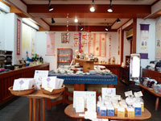

JAPANESE FOLK TOY MUSEUM日本郷土玩具館
1967年（昭和42年）に米蔵を改修して開館。
敷地内には、日本全国の玩具や工芸品が40,000点のうち約5,000点が展示されている展示室とショップ、ギャラリー、カフェが併設されています。ギャラリーでは、クラフトを中心にガラス・陶器・人形・アクセサリー・インテリアなどの企画展が、ほぼ毎日行われています。
日本郷土玩具館
古い米蔵を改装した展示室は、第1室～第4室に分かれておりそれぞれ江戸期～現代までの全国各地の郷土玩具、だるま・鯛玩、木製玩具・独楽、雛人形・天神・凧・面などが展示されています。
日本郷土玩具館ショップ
現在も現役で作られている郷土玩具や自然素材の玩具がところせましと並べられ販売されています。岡山県の伝統工芸品にも指定されている倉敷はりこや倉敷緞通、イ草製品、備中和紙、倉敷帆布など玩具の他にも様々な商品が取り揃えられています。
瀧本屋弥兵衛

日本郷土玩具館が江戸時代に商っていた呉服・糸物屋の屋号である名称が付けられたこのスペースには小物やアクセサリーなど和をテーマに伝統的な作品から現代風にアレンジされた物まで幅広く集められいます。
＋１ギャラリー
内蔵を改装したギャラリー。蔵があったそのままの場所の為、館の奥手に位置しています。このスペースでは、クラフト作品を中心とした企画展が常に行われています。
サイドテラス
かつては和室であった場所は、天井の梁も当時もまま生かされ改装されています。明るい光が差し込むスペースには、倉敷ガラスや酒津兜山窯の陶器などの器やテーブルウェアが取り揃えられています。
サイドテラスカフェ
かつては庭であったカフェスペースでは、郷土玩具に囲まれながらひとやすみ出来ます。本場イタリア・イリーのカプチーノやシチリア産の真赤なオレンジを使用したタロッコジュースをご賞味頂けます。
取材協力：日本郷土玩具館
公式サイトをみる
一覧に戻る